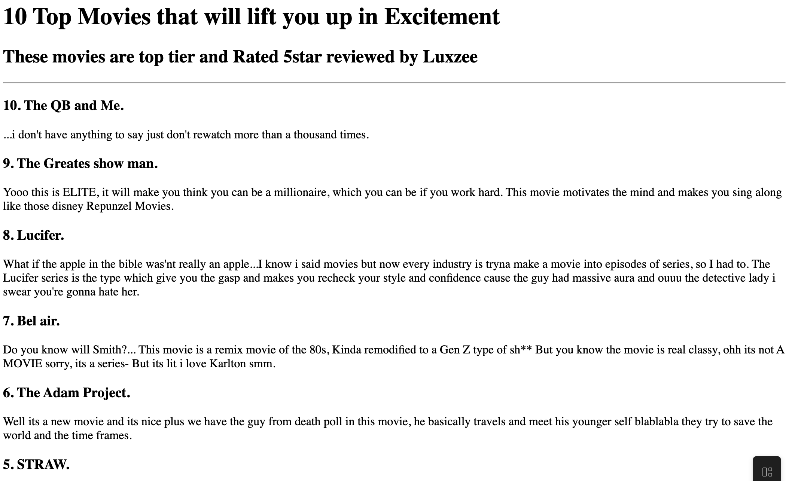
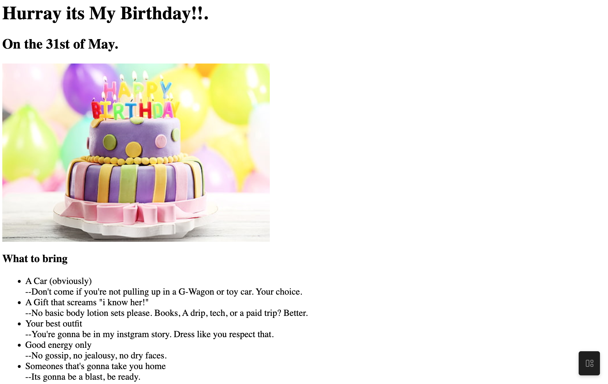

Render Zena's Portfolio
Welcome! I'm Render Zena, a passionate tech student with a strong focus on Networking, Security, and Web Development. This portfolio showcases some of the projects i've built, reflecting my creativity, skills, and dedication to problem solving.
- A movie ranking project .
A simple but fun project where i created a webpage to reccomend and rank my top 10 movies.
[View Project]

- Birthday Ranking Project
This is a creative project designed as an online birthday card.
[View Project]

About Me
Contact Me